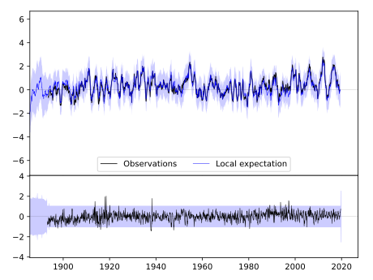
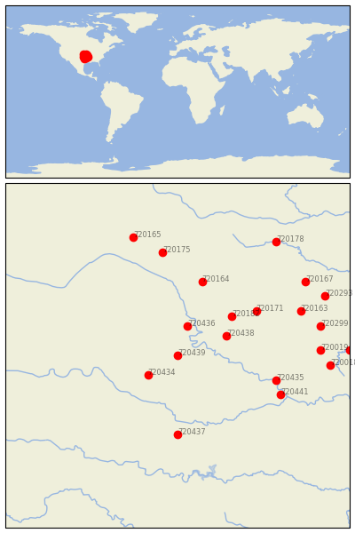
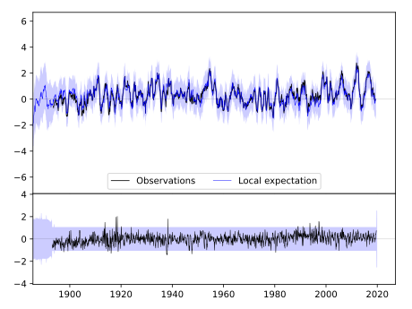
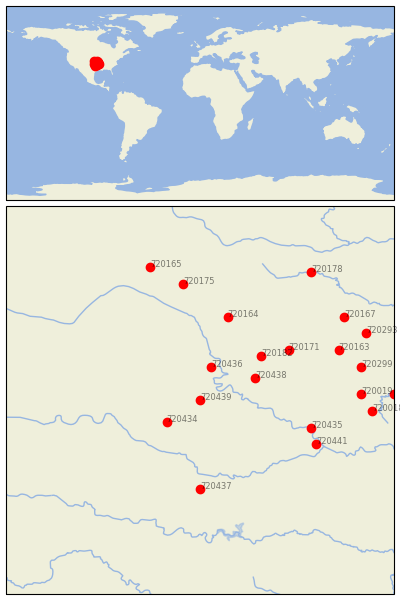

PERRY [USA]
 


| Neighbour | Name | Country | Distance | Lon/Lat | Years |
|---|
| 720439 | PERRY | USA | 0 | -97.3, 36.3 | 1893-2019 |
| 720436 | NEWKIRK 1NW | USA | 69 | -97.1, 36.9 | 1893-2019 |
| 720434 | KINGFISHER | USA | 69 | -97.9, 35.9 | 1893-2019 |
| 720438 | PAWHUSKA | USA | 99 | -96.3, 36.7 | 1893-2019 |
| 720182 | SEDAN | USA | 132 | -96.2, 37.1 | 1885-2019 |
| 720164 | EL DORADO | USA | 172 | -96.8, 37.8 | 1886-2019 |
| 720171 | INDEPENDENCE | USA | 174 | -95.7, 37.2 | 1872-2019 |
| 720437 | PAULS VALLEY 4 WSW | USA | 177 | -97.3, 34.7 | 1892-2019 |
| 720435 | MUSKOGEE | USA | 188 | -95.3, 35.8 | 1892-2019 |
| 720441 | WEBBERS FALLS 5 WSW | USA | 209 | -95.2, 35.5 | 1892-2019 |
| 720175 | MCPHERSON | USA | 235 | -97.6, 38.4 | 1891-2019 |
| 720163 | COLUMBUS | USA | 244 | -94.8, 37.2 | 1891-2019 |
| 720019 | GRAVETTE | USA | 259 | -94.4, 36.4 | 1892-2019 |
| 720299 | NEOSHO | USA | 267 | -94.4, 36.9 | 1878-2019 |
| 720165 | ELLSWORTH | USA | 278 | -98.2, 38.7 | 1866-2019 |
| 720018 | FAYETTEVILLE EXP STN | USA | 279 | -94.2, 36.1 | 1881-2019 |
| 720167 | FT SCOTT | USA | 284 | -94.7, 37.8 | 1843-2019 |
| 720293 | LAMAR | USA | 298 | -94.3, 37.5 | 1885-2019 |
| 720178 | OTTAWA | USA | 310 | -95.3, 38.6 | 1893-2019 |
| 720017 | EUREKA SPRINGS 3 WNW | USA | 313 | -93.8, 36.4 | 1888-2019 |